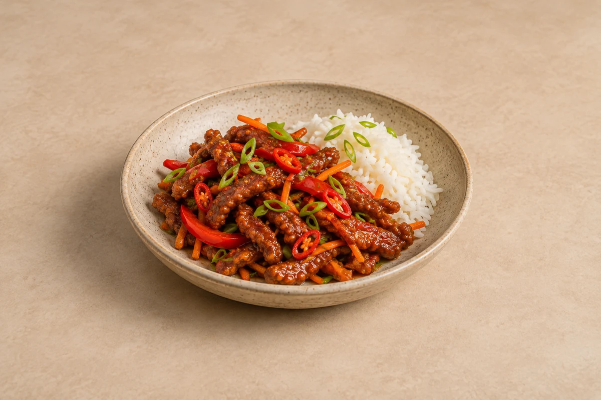

Fakeaway
Crispy Chilli Beef
Crisp beef strips in a sticky, tangy chilli sauce with peppers and carrots. Serves 2.
Ingredient quantities update automatically

Ingredients
Beef and rice
Vegetables
Sauce
Method
Prepare the rice and sauce
Cook the jasmine rice according to the packet instructions. Mix all the sauce ingredients together in a small bowl and set aside.Coat the beef
Pat the thin beef strips dry. Toss with the light soy sauce and egg white, then add the cornflour and toss until every strip has a rough coating. Separate any strips that stick together.Fry until crisp
Pour enough vegetable oil into a deep frying pan to give a shallow layer about 1cm deep; the amount depends on pan width. Heat to about 180°C. Fry the beef in small batches for 2–3 minutes until crisp and cooked, separating the strips. Lift onto a wire rack. Do not crowd the pan. Carefully reserve a little oil for the vegetables; let the rest cool before disposing of it.Stir-fry the vegetables
In a separate wok or frying pan, heat 1 teaspoon of the frying oil per 2 servings over a medium-high heat. Stir-fry the pepper and carrot for 2–3 minutes, keeping a little bite. Add the garlic, ginger and chilli and cook for 30 seconds.Glaze the beef
Add the mixed sauce and bubble for 1–2 minutes until glossy. Add the crisp beef and most of the spring onions. Toss briefly, just until coated, so the beef stays as crisp as possible.Serve immediately
Divide the rice between bowls and add the beef. Scatter over the remaining spring onions and serve straight away.
Tips & leftovers
Storage
Cool rice as quickly as possible, ideally within 1 hour, and refrigerate in shallow portions. Eat the rice, and any leftovers mixed with it, within 24 hours. Keep other cooked components separate and use within 48 hours. Keep beef, sauce and rice separate where possible; the coating softens once sauced.
Freezing
Freeze suitable cooled components separately for up to 2 months for best quality. If freezing freshly cooked rice, cool it quickly and freeze within 1 hour. Defrost in the fridge and use within 24 hours. Freeze cooked beef and sauce separately; the coating will be less crisp after thawing.
Reheating
Reheat rice only once until steaming hot throughout and eat immediately. Heat other cooked components thoroughly, keeping cold toppings separate. Reheat the beef once on an oven tray until steaming hot, then toss with reheated sauce; heat rice separately.
Substitutions
Use sirloin or rump sliced thinly across the grain. Reduce fresh chilli and use a mild sweet chilli sauce for less heat. Rice vinegar can be replaced with a little cider vinegar to taste.
Keeping leftovers safe
Rice needs faster cooling: cool quickly, ideally within 1 hour, and refrigerate; use within 24 hours. If freezing freshly cooked rice, cool it quickly and freeze within 1 hour. Defrost in the fridge and use within 24 hours. Reheat only once until steaming hot throughout and eat immediately. Do not heat rice again if it was already reheated, including a heated microwave pouch. Keep the fridge at 0–5°C and the freezer around −18°C.
Food-safety guidance: Food Standards Agency: chilling and freezing · reheating leftovers · cooked rice.